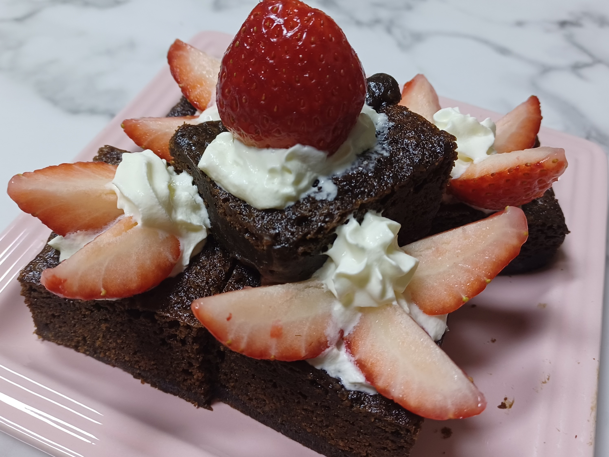
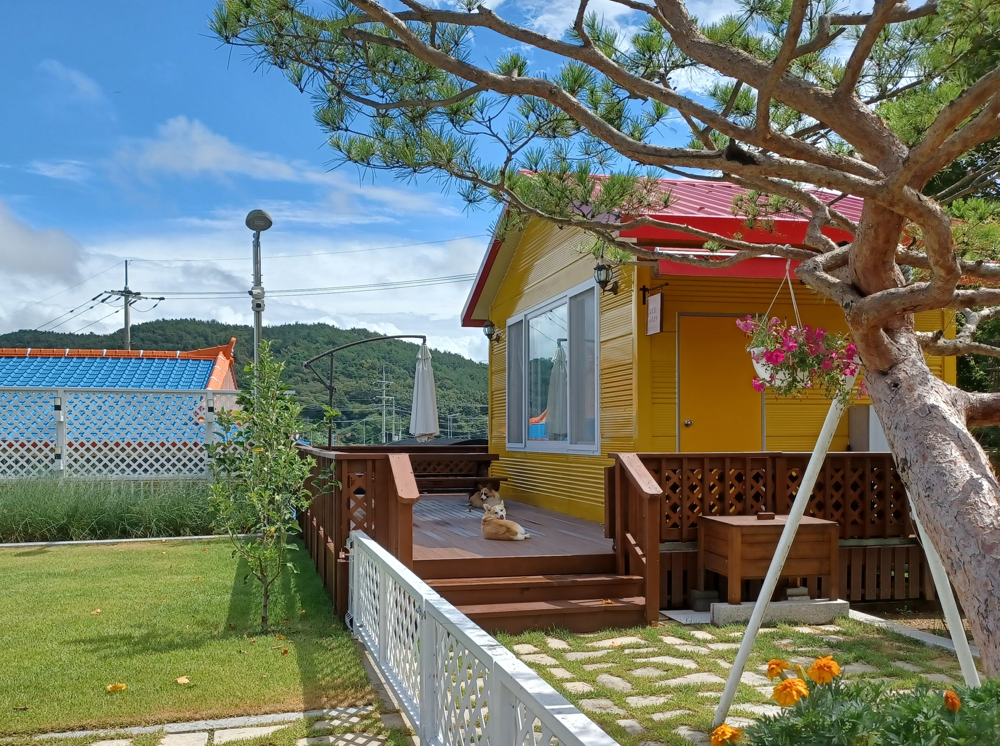
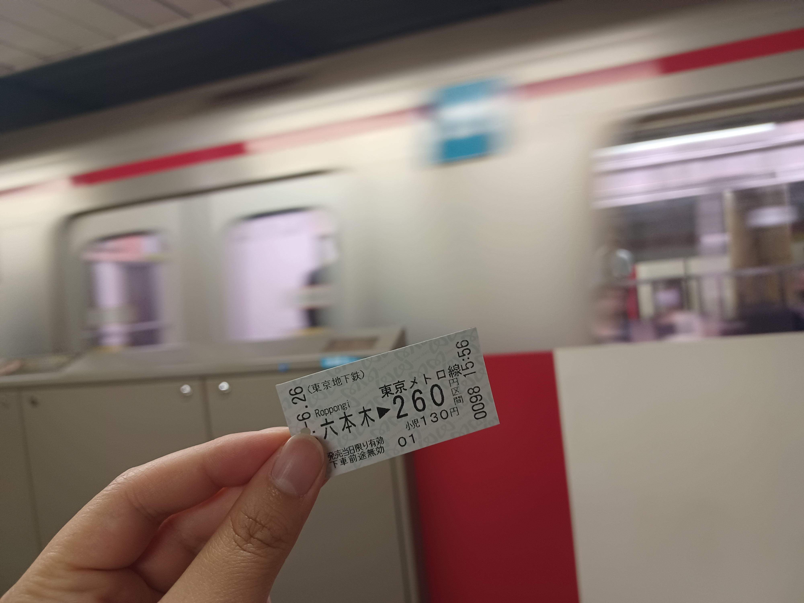

|
|
Welcome to my homepage |
|
| INDEX | RESUM | STORY | MAJOR | BUCKIT LIST | ||
|
Lee. JiWoo 010-6817-9870 jjiu8044@gmail.com |
나의 프로필
나의 취미베이킹, 사진찍기, 여행   베이킹: 약 1년 전부터 시작한 취미로 사진 속 브라우니는 작년 크리스마스 때 만들었습니다. 사진찍기: 평소 예쁜 풍경이나 여행 갔을 때의 풍경을 찍는 것을 좋아합니다. 여행: 올해 가장 기억에 많이 남는 여행지는 도쿄였습니다. 제가 스스로 돈을 벌어 간 첫 여행이라 더욱 재미있었던 것 같습니다. 나의 인생 책헤르만 헤세의 '데미안'은 초등학교 6학년 때 처음 접한 책입니다. 처음 읽었을 때부터 정말 재미있게 읽어서 7년이 지난 지금까지도 1년에 한 번씩 꾸준히 정독하고 있습니다. |
나의 인생 노래-청사진세상은 늘 말해 yeah 어렵고 힘들 거라고좌절하길 바래 yeah 버겁다 느낀 그 순간 일부러 또 절망의 끝 따윌 속삭여 내겐 안 통할 걸 난 날 믿어 어떻게 무너질까 내심 기대하며 날 선 가시처럼 자극하기만 해 날 지켜봐 right now 난 크게 소리쳐 매일 꿈꿔온 나인 걸 매일 버텨온 긴 싸움인 걸 나의 전부를 건 청사진인 걸 매일 기다려온 내일인 걸 Watch me do what I want 날 시험 해봤자 난 나아가 한걸음 babe 날 좀 내버려 둬 날 막아서 봤자 더 나아가 한걸음 babe 저 멀리 손짓하는 햇살 속에 푸른 꿈이 나를 비춰 설레게 하는 걸 여전히 날 웃게 하는 걸 난 계속 멈추지 않고서 달려갈 걸 절대 지치지 않고서 달려갈 걸 저기 닿을 듯한 빛은 꺼지지 않아 언제나 청사진 속 길을 찾는 걸 세상이 말한 답은 틀렸다고 난 언제나 청사진 속 꿈을 꾸곤 해 보란 듯 이뤄내고 말 거라고 나의 내일은 파래 맘껏 떠들라 해 높은 저곳에 내 주먹 꽉 쥐고 올라갈 게 진가를 발해 yeah yeah 숨이 턱 막힐 때마다 시련은 또 발걸음마다 날 기다려 그래도 달릴 걸 난 날 믿어 어떻게 상처를 줄까 몰래 비웃어도 못된 관중처럼 모른 척 기만해도 날 지켜봐 right now 더 크게 소리쳐 벅찼던 매일 yeah 꿈꿔왔던 내일에 다 날 데려다줘 날 내려봤던 모든 것들 위로 올라가 더 위를 봐 Watch me do what I want 날 시험 해봤자 난 나아가 한걸음 babe 날 좀 내버려 둬 날 막아서 봤자 더 나아가 한걸음 babe 저 멀리 손짓하는 햇살 속에 푸른 꿈이 나를 비춰 설레게 하는 걸 여전히 날 웃게 하는 걸 난 계속 멈추지 않고서 달려갈 걸 절대 지치지 않고서 달려갈 걸 저기 닿을 듯한 빛은 꺼지지 않아 I'll make you say Oh oh oh oh oh oh 바다 끝을 향해 나를 던져 Oh oh oh oh oh oh 후회 없이 go 후회 없이 외쳐 파란 선으로 세상을 넓혀 나를 지켜보길 바래 하늘 보며 Imma party 저 멀리 손짓하는 햇살 속에 푸른 꿈이 나를 비춰 설레게 하는 걸 여전히 날 웃게 하는 걸 난 계속 멈추지 않고서 달려갈 걸 절대 지치지 않고서 달려갈 걸 저기 닿을 듯한 빛은 꺼지지 않아 난 언제나 청사진 속 길을 찾는 걸 세상이 말한 답은 틀렸다고 난 언제나 청사진 속 꿈을 꾸곤 해 보란 듯 이뤄내고 말 거라고 나의 내일은 파래 설레임이 날 에워싸 꼭 빛나길 바래 놓지 않아 절대 절대 절대 나의 내일은 파래 설레임이 날 에워싸 꼭 빛나길 바래 놓지 않아 절대 절대 절대 나의 내일은 파래 |
|
|
||